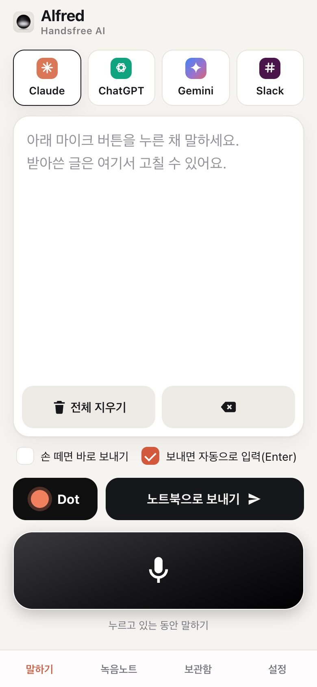
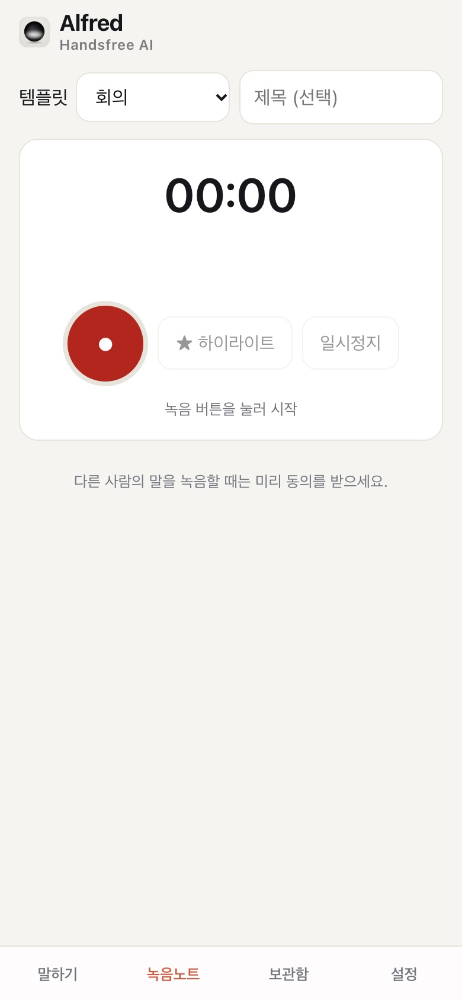
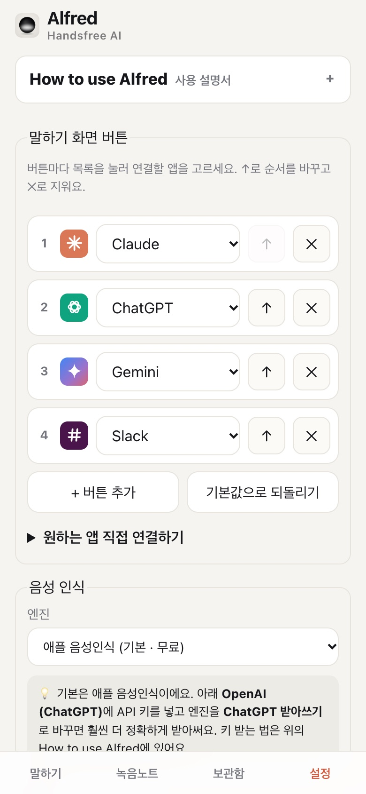

휴대폰의 마이크 버튼을 누르고 말하면, 노트북의 ChatGPT·Claude·Gemini 입력창에 글이 들어가고 전송까지 돼요. 받아쓰기 앱이 아니라, 키보드 없이 AI와 일하게 해 주는 나만의 비서예요.
Mac 도우미는 Apple 공증을 받은 앱이에요. 노트북으로 보내기와 마우스로 말하기에 필요해요.
ChatGPT, Claude, Gemini, Perplexity, Grok, Copilot, Meta AI, DeepSeek, Slack. 앱이 있으면 앱에, 없으면 브라우저에 넣어요.
버튼마다 연결할 AI를 고르고 순서를 바꾸세요. 노션·메모·카카오톡처럼 노트북의 아무 앱이나 직접 연결할 수 있어요.
기본은 무료 애플 음성인식. OpenAI 키를 연결하면 ChatGPT가 전문 용어와 영어 섞인 말까지 정확하게 받아써요.
조용한 구간은 건너뛰고 말소리만 저장해요. 화면을 꺼도 계속되고, 잠금화면에서 바로 확인해요.
한 줄 요약, 결정 사항, 담당자별 할 일, 화자 구분, 번역, 모든 기록에 질문하기.
입력창에서 클릭을 길게 누른 채 말하면 커서 위치에 글이 바로 들어가요. 휴대폰 없이도 돼요.



휴대폰과 노트북은 같은 Wi-Fi에 있어야 해요. 자세한 사용법은 앱의 설정 → How to use Alfred에 있어요.